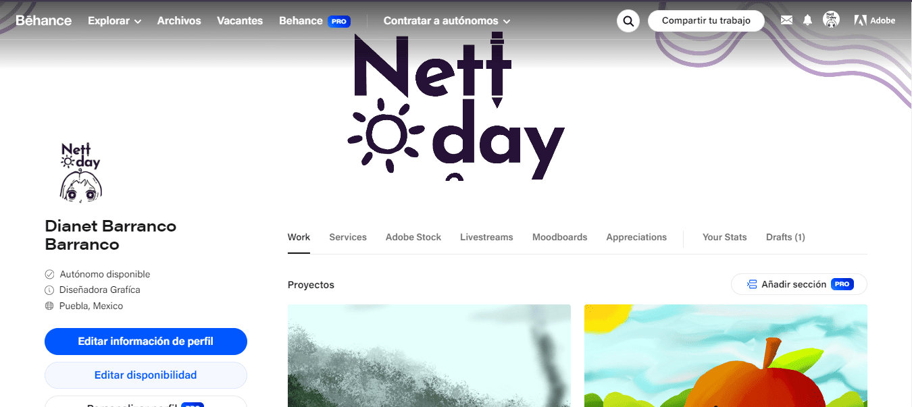
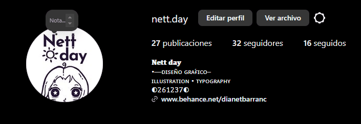
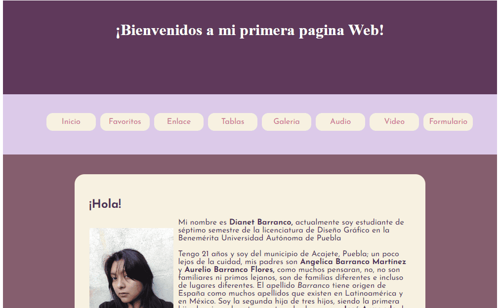
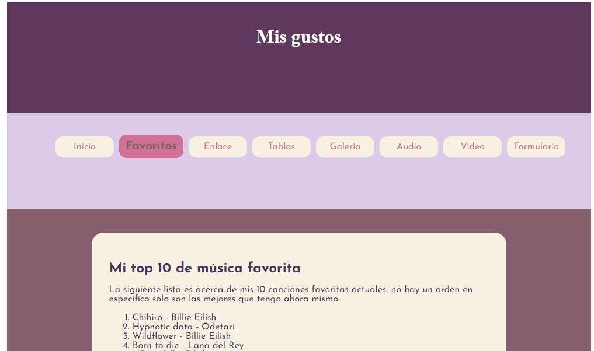
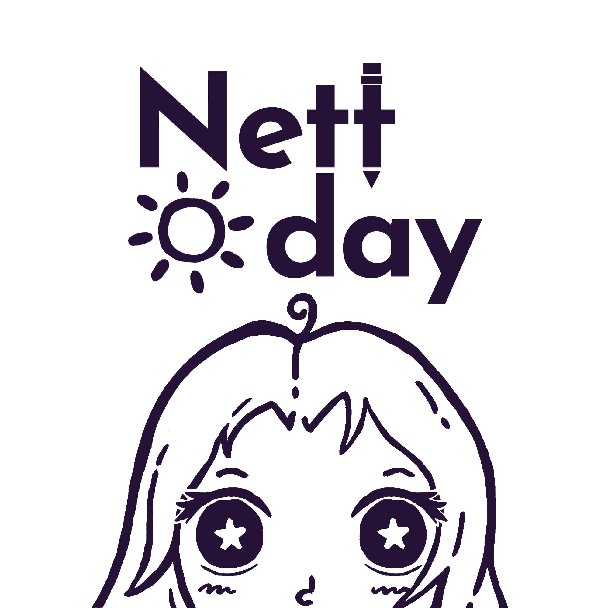
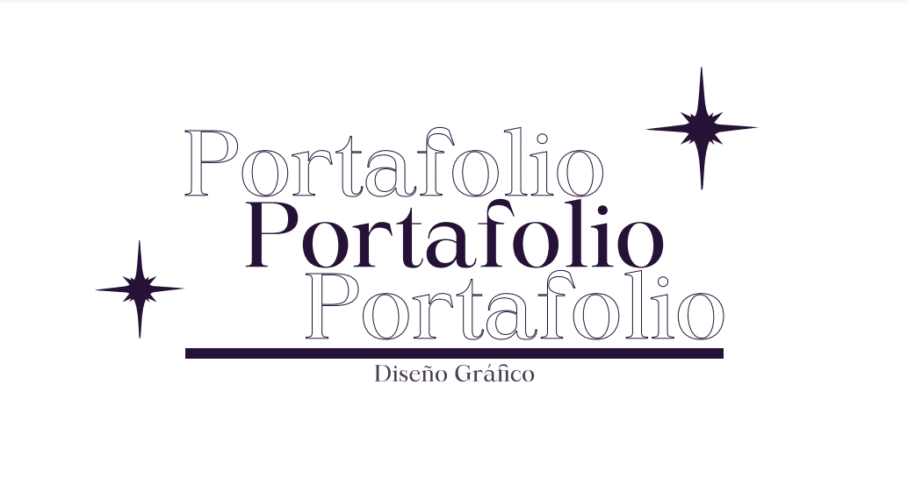

Mis redes
Utilizar dos redes sociales me favorece como diseñadora gráfica porque me ayuda a expandir mi visibilidad y llegar a un público más diverso. Cada plataforma tiene su propio enfoque y usuarios, lo que me permite conectar con distintos tipos de personas, aumentando mis posibilidades de generar interés en mi trabajo y captar nuevas oportunidades. Además, al usar diferentes formatos y herramientas en cada red, puedo mostrar mi portafolio desde varias perspectivas, destacando tanto la creatividad como la técnica. Estar presente en más de una plataforma me permite fortalecer mi presencia en el ámbito digital, interactuar con una audiencia más amplia y abrirme a nuevas oportunidades profesionales.
Behance Behance es también muy útil para mí, permite mostrar mis trabajos de manera más profesional y enfocada. Al estar dirigido a personas y empresas que buscan talento creativo, sé que quienes ven mi perfil están realmente interesados en el tipo de proyectos que hago. Además, me permite organizar mis proyectos de una manera ordenada y clara, lo que facilita que la gente encuentre lo que busca. También puedo participar en retos creativos que me dan más exposición y me conectan con otros diseñadores. En resumen, Behance me ayuda a promocionar mi trabajo ante personas que están buscando justamente lo que ofrezco, y es una plataforma donde puedo mostrar mi trabajo de manera mucho más completa y profesional. 
Instagram es una plataforma perfecta para mí como diseñadora gráfica, ya que me permite mostrar mi trabajo a una gran cantidad de personas de todo el mundo y, al mismo tiempo, funciona como un portafolio digital súper accesible. Puedo compartir imágenes de buena calidad y enseñar mi estilo y proyectos de forma atractiva, lo que hace que cualquiera que vea mi perfil se haga una idea rápida de lo que hago. Además, me da la oportunidad de interactuar directamente con la gente que sigue mi trabajo, recibir comentarios y hasta conectar con otros diseñadores o posibles clientes. Usar hashtags estratégicos también me ayuda a que mi trabajo llegue a personas que buscan exactamente lo que hago. Y lo mejor es que puedo aprovechar los distintos formatos que ofrece, como las publicaciones, historias y reels, para mostrar desde el proceso creativo hasta el resultado final. 

Conoceme
Soy una apasionada del diseño gráfico, especializada en tipografía y creación de contenido visual que conecta con la esencia de cada proyecto. A través de mi trabajo, busco transmitir mensajes claros y atractivos, poniendo especial atención en los detalles y el uso del color. Mi página web es una extensión de mi personalidad creativa y profesional, un espacio donde podrás conocer más sobre mi trayectoria y la visión que me impulsa a seguir innovando en el mundo del diseño.
¿Quien soy? Al entrar a mi sitio web, te doy una cálida bienvenida a un espacio diseñado para mostrarte quién soy y cómo conecto mis pasiones con mi trabajo. Como diseñadora gráfica, me especializo en el uso creativo de tipografía y colores, pero hay mucho más detrás de cada proyecto. Soy una persona que encuentra inspiración en los momentos cotidianos: mis pasatiempos favoritos son ilustrar, escuchar música y caminar. Estos momentos me permiten desconectar y, a la vez, encontrar nuevas ideas que aplico en mis diseños. Ya sea a través de un trazo en papel o de la observación de mi entorno, estos momentos me recuerdan lo importante que es conectar el arte con las emociones.
En esta página de bienvenida, te invito a conocer no solo mi trayectoria profesional, sino también la persona detrás de los proyectos. Cada paso, cada ilustración, y cada canción que escucho influye en mi forma de crear. He diseñado este sitio para que puedas explorar mi estilo único, ese que busca siempre el equilibrio entre lo visual y lo personal. Es un lugar donde la creatividad se encuentra con la autenticidad, y donde mi trabajo habla tanto de mis habilidades como de las pequeñas cosas que me apasionan. 
Mis gustos En esta sección de gustos personales, te invito a conocer el lado más íntimo de mis intereses. Mi amor por la música, por ejemplo, se refleja en los artistas que más me inspiran: Billie Eilish y Lana del Rey. Sus letras y melodías me acompañan a diario, influyendo en mi estado de ánimo y en mi forma de ver el mundo. Las emociones que transmiten sus canciones también las llevo al diseño, creando proyectos que buscan generar impacto a nivel emocional. Además, soy fan de varios streamers como El Mariana y El Rubius, cuyas personalidades dinámicas y creativas me hacen disfrutar de mis ratos libres, siempre llenos de risas y entretenimiento.
Pero mis gustos no se limitan solo a la música o los streamers. También disfruto sumergirme en el mundo de los videojuegos y las series, que son otra fuente de creatividad y desconexión para mí. Me encanta cómo estos medios logran contar historias y crear mundos únicos, algo que también intento reflejar en mi trabajo como diseñadora. Esta sección de mi página es un espacio donde comparto todo lo que me inspira y motiva, para que puedas conocerme de una forma más cercana y descubrir las influencias que me acompañan en mi día a día 
Información importante
En esta sección de mi sitio web, encontrarás más información detallada sobre mi trayectoria como diseñadora gráfica. A través de mi currículum y portafolio, quiero mostrarte no solo mi experiencia profesional, sino también los proyectos que mejor representan mi estilo y enfoque creativo. Cada trabajo refleja mi compromiso con la excelencia y la atención al detalle, características que definen mi visión dentro del diseño gráfico.
Mi Currículum currículum es una ventana a mi desarrollo profesional como diseñadora gráfica. En él encontrarás mi formación académica, las herramientas que domino como Adobe Suite, y las diferentes áreas en las que he trabajado, desde la tipografía hasta el diseño editorial. He tenido la oportunidad de colaborar en proyectos que abarcan desde la creación de identidades visuales hasta la ilustración digital, lo que me ha permitido crecer y diversificar mis habilidades. Mi enfoque siempre ha sido combinar creatividad y funcionalidad, entregando soluciones visuales que se ajusten a las necesidades de cada cliente. Además se incluye una ilustración propia que forma parte de mi marca personal y profesional. 
En mi Portafolio disponible tanto en Behance como en formato PDF, presento una selección curada de los proyectos más destacados en los que he trabajado. Aquí podrás explorar ejemplos de ilustración, diseño tipográfico, creación de carteles y otros trabajos que muestran mi estilo personal y la versatilidad de mi trabajo. Al presentarlo en un formato accesible como PDF, busco que puedas conocer a fondo la calidad de mi diseño, con imágenes de alta resolución y descripciones detalladas de cada proyecto. Es un reflejo de mi pasión por el diseño y de mi dedicación a cada fase creativa, desde la conceptualización hasta la entrega final. 